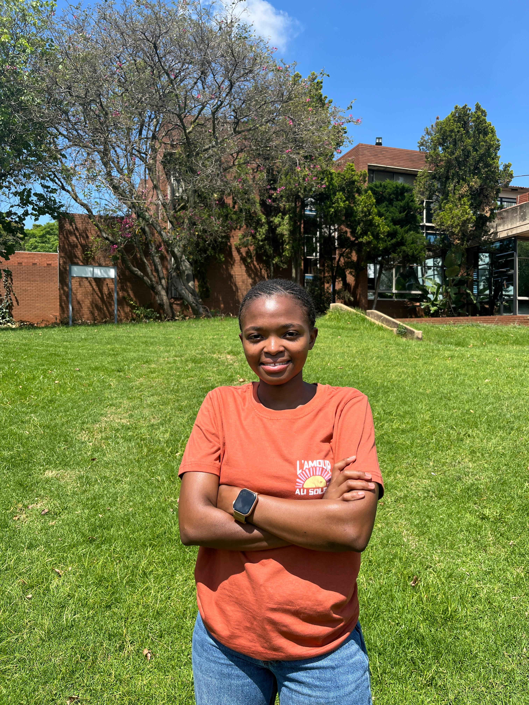

Final-Year Information Systems Student —
Front-End Developer · Data Analyst · Business Analyst
A final-year Information Systems student at the University of Johannesburg with a passion for technology, problem-solving, data-driven decision making, and building digital solutions that create real value. I bridge the gap between business needs and technology — turning complex problems into intuitive applications and meaningful insights.

A final-year BCom Information Systems student at the University of Johannesburg, expected to graduate in 2027.
Throughout my studies, I have developed a strong understanding of how technology, data, and business processes work together to solve real-world problems. I enjoy building practical solutions that improve user experiences and support better decision-making.
Building responsive, user-friendly web applications using HTML, CSS, JavaScript, and modern web development principles.
Working with data to identify patterns and generate insights using SQL, Excel, Python, and Power BI.
Designing and managing databases to ensure accurate, secure, and efficient storage and retrieval of information.
Analysing business requirements and translating them into technology solutions through structured system design.
Build intuitive, accessible web applications. Seeking opportunities to apply and grow skills in HTML, CSS, JavaScript, and modern web technologies.
Transform raw data into meaningful insights. Interested in dashboards, data visualisation, SQL, Python, and business intelligence tools.
Bridge business objectives and technology solutions. Enjoy requirements gathering and improving processes through technology.
Contribute to development of information systems. Interested in requirements gathering, process modelling, and solution design.
A blend of technical and analytical skills built through coursework, projects, and self-driven learning.
Real-world problems, practical solutions — from academic guidance platforms to personal finance tools.
Final Year Academic Project · Web Application · Prototype Completed
Course Compass is a web-based academic guidance platform designed to help South African learners from Grade 9 through post-matric make informed educational decisions. The platform assists students in understanding university admission requirements, calculating APS scores, identifying qualification gaps, and discovering alternative academic pathways.
Problem Solved: Many learners are excluded from higher education due to strict admission requirements and limited awareness of alternative pathways. Course Compass helps learners understand their options and create achievable educational plans.
Empowers South African learners from Grade 9 through post-matric to navigate the higher education landscape with clarity, helping bridge the access gap in tertiary education.
A student budget tracking web app designed to help students manage finances, track expenses, monitor savings, and understand spending habits through an interactive dashboard.
A responsive calculator application built to strengthen JavaScript programming skills and demonstrate front-end development concepts with a real-time, clean interface.
Building a strong foundation in information systems, technology, and business.
University of Johannesburg
Practical experience building customer service, communication, and teamwork skills in a fast-paced retail environment.
Kingsley Heath
Continuous learning through professional development and industry-recognised programmes.
Open to graduate programmes, internships, and entry-level opportunities in front-end development, data analysis, business analysis, and systems analysis.